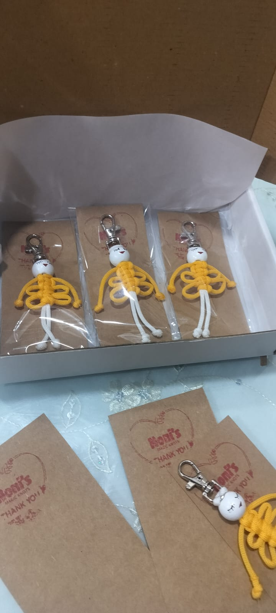
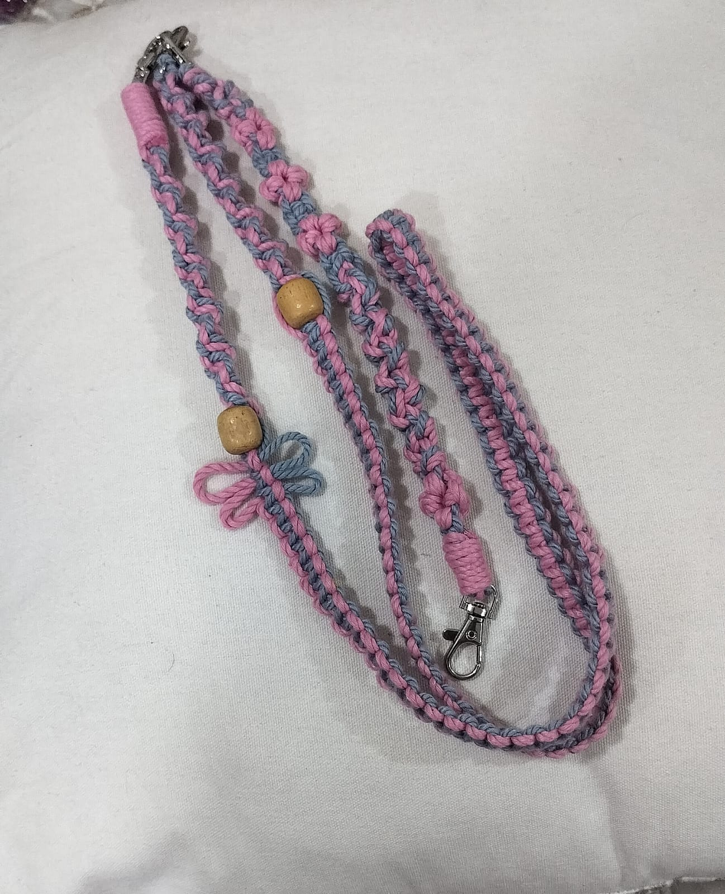
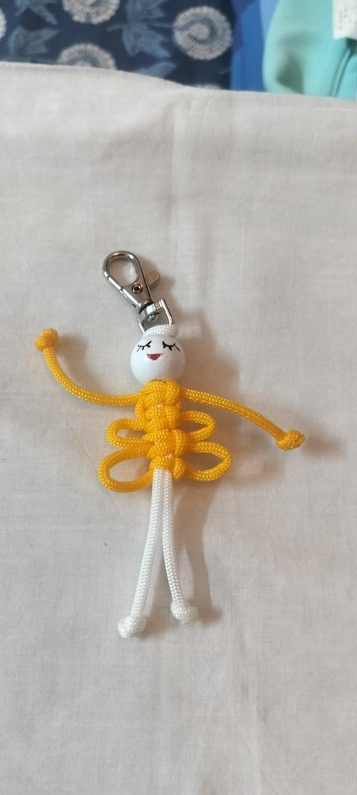

Made with attention
Each piece begins at the worktable, shaped slowly by hand.
Made by hand · Sagar, Madhya Pradesh
Meet Rajni ji and the joyful world she shapes from cord, colour and patient hands—one knot, one story and one learner at a time.

Real work · photographed in her studio

Her practice
A cord becomes a loop. A loop becomes a knot. In patient hands, an everyday thread becomes a gift, a memory—and knowledge carried forward.
Each piece begins at the worktable, shaped slowly by hand.
Small objects made for gifting, keeping and everyday delight.
A practice kept alive by teaching the next pair of hands.
Selected archive
A carefully selected record of real pieces, process and finished batches from Rajni ji’s own archive.
This is an enquiry-led archive. Rajni ji personally confirms what can be recreated, along with price and timing.
The maker
Rajni Garg makes with the kind of attention that cannot be hurried.
Her archive holds experiments, gifts, small batches and the visible steps of learning: cord measured, colours paired, knots tightened, a face painted by hand.
This website is not a factory shelf. It is a respectful home for that practice—and an invitation to ask, learn and keep the knowledge moving.
The joy is in seeing a simple thread become something that makes another person smile.
Learn with Rajni ji
For curious beginners, children, families and communities—learning starts with a simple conversation.

Warm, beginner-friendly sessions for small groups, subject to Rajni ji’s confirmation.
Enquiries from schools, neighbourhood groups and cultural communities are welcome.
Future guides will document materials, techniques and the memories held in each form.
A gentle process
Every enquiry stays personal. Nothing is mass-produced and nothing is promised automatically.
Tell us the occasion, quantity, colours or what you hope to learn.
She personally checks the design, time, material and capacity.
Only then are feasibility, price and timing confirmed.
Begin a conversation
Share the starting point. Rajni ji or an authorised family member will personally confirm design feasibility, price and timing.
No automatic price or delivery promises